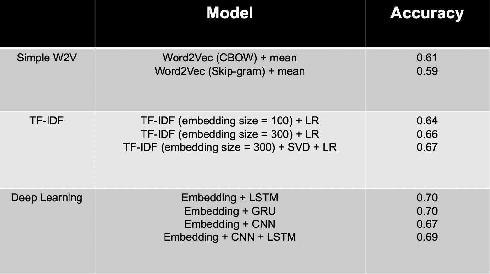
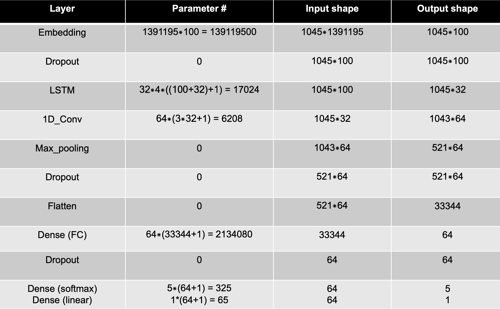

Abstract
The task is based on the yelp_academic_dataset_review.json file (5 million rows) in the challenge. It has two fields, namely “stars” and “text”. The “text” field is customer’s raw review sentence, while the “stars” field is the customer’s rating for the corresponding review ranging from 1 to 5. Our goal is to predict the stars based on the text.
Review data preprocessing
We begin with looking at the first 10,000 lines of the review data. Three issues were founded:
- various language types
- emojis
- numbers
Next step is to solve these problems step by step. The whole procedure are briefed described as follows.
- In view of computation cost, we just encode each string with utf-8 and delete those ‘\x’ part. In such way, the text will remain only Latin languages.
- Punctuations are usually useless except emoticons. So we will consider emoticons as individual words.
Numbers are sometimes very confusing. In different situation, the same number will have different meanings. So they are supposed to be deleted.
To further reduce the computation cost, we reduce the corpus size by performing the following operations.
- Expand abbreviation: Reduce the size of dictionary.
- Unify adversatives: In such way, it is easier to create adversative phrases which will extract more information.
- Simple spell check: English words which contain three or more consecutive letters are suspicious words. For example, ‘noooooo’. We’ll first look it up in WordNet corpus. Then check the word with only two consecutive letter exists and if not check the case with only one letter. (‘noooooo’ -> ‘noo’ -> ‘no’) If all these approaches failed, an operation using python built-in function called ‘suggest’ will be performed.
- Delete stop words: Stop words are those useless words like ‘the, and, is …’ which can’t give us any information whether the restaurant is good or not.
- Word lemmatization: There are many tenses in English. Our purpose is to convert verbs to their primary form.
- Find bigrams: The limitation of bag-of-words is that connections between words are lost. Constructing phrases can remit it . There is a function called ‘phrase’ in the package ‘gensim’. This function comes in handy to tokenize the sentence then search through all the bigrams and count each bigrams. According to its built-in bigram dictionary and the frequency calculation schema, the function will convert some words into a bigram form.
Deep learning methods for predicting the ratings
In this section, a deep learning model is constructed to predict the star that a customer will give based on the review he writes.
There are many sentiment analysis model using in NLP field. Many models are tried and the results are shown below.

As we can see from above, the result is pretty good for deep learning model. So maybe we can build our own deep learning model by combining the advantages of existing model to make the prediction. We know that LSTM is good at dealing sequential texts and CNN is good at extracting the local features. By combining them, the result should be better than existing ones. The final model we built is shown below.

In this model, the first layer is the embedding layer, it can transform the reviews into word vectors. I choose the embedding size be 100, and the number of unique words is 1391195 which is also the length of original one-hot vector for word in reviews (Later I think the result will be better if I use a pretrained embedding layer). Then I add a dropout layer for higher speed and avoiding overfitting. LSTM layer is added then, there are 4 gates and we have 32 LSTM units in this layer. After that, the output will be dealt with a 1-dimentional convolution layer. There are 64 kernels in this layer, and the kernel size is 3 to work as a tri-gram model. To extract the local feature, a max-pooling layer is added behind this layer. Then we add dropout and flat is into a fully connected layer. The last layer is SoftMax if we want it be a classification problem and linear if we want it be a regression problem.
The accuracy of this model in validation sets with 1 million samples is 0.715 for classification. And the mean absolute error is 0.37 for regression. The result is pretty awesome and I choose it as the final model.